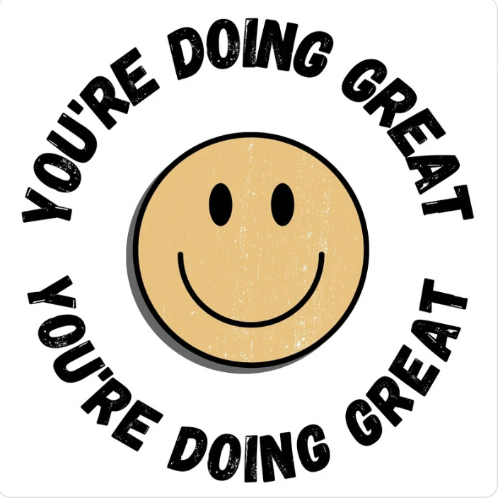

Hello everyone,
I’m Jennifer Wu, a globally recognized CG artist with a strong foundation in AI, and I’m excited to connect with fellow creatives. With over 13 years of experience in software development, I’ve always been driven by a deep passion for art. This passion has shaped my journey and led me to merge my technical expertise with my artistic vision, resulting in a unique set of skills that I am proud to contribute to the world of CG art.
My work spans a broad range of disciplines, including concept design (both 2D and 3D), character and environment art in Photoshop, character sculpting in Maya and ZBrush, scene modeling in Blender, and rendering in Unreal Engine 5.4. One area that particularly excites me is the fusion of traditional Chinese ink painting with CG art, where I explore ways to bring a centuries-old art form into the digital age, creating something both innovative and deeply rooted in history.
In addition to my artistic practice, I am deeply interested in the application of AI in CG art. I have spent considerable time exploring AI-powered tools such as Stable Diffusion and ComfyUI for 2D art, and I am closely following the upcoming release of World Labs’ “Generating 3D World” tools, expected at the end of 2024—this promises to be a significant advancement in 3D AI.
I am always eager to collaborate, share ideas, and learn from talented CG artists around the world. I believe in the power of creativity to push boundaries, and I’m committed to contributing to a supportive, open, and inclusive creative community.
I look forward to connecting with you all and working together to create something truly extraordinary.
Best regards,
Jennifer Wu
(CG Artist)
If you have any questions, feel free to email me.